The basis functions have the following key properties:
Partition of unity: At any point, the sum of all basis functions equals 1
Interpolation: Each basis function equals 1 at its own node and 0 at all other nodes
Continuity: The functions are continuous across element boundaries
The figures below show the basis functions and node locations for different polynomial orders.
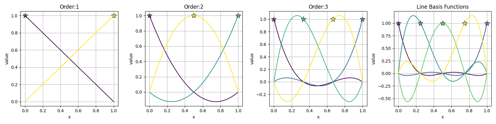
The figures below show the basis points (nodes) for line elements of different polynomial orders. The basis points represent the locations where the basis functions take on values of 1 or 0.
For a line element:
The basis points (nodes) for line elements are the locations where the basis functions take on values of 1 or 0. These points are used to define the interpolation properties of the element.
For a line element, the basis points are distributed along the line segment [0,1] according to the polynomial order:
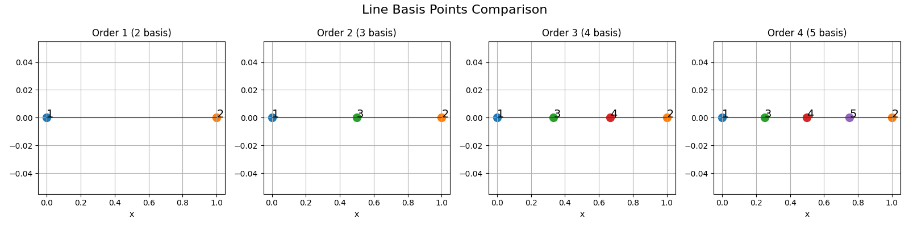
For a line element of polynomial order \(p\), the number of basis points \(n\) is given by:
\[n = p + 1\]
Higher order elements (\(p > 1\)) have more basis points, enabling higher-order polynomial interpolation for improved approximation of curved geometries and solutions.
The triangle basis functions are used to interpolate values across a 2D triangular element. For a triangle element of order n, there are (n+1)(n+2)/2 basis functions.
The basis functions are defined using barycentric coordinates (L1, L2, L3) where:
- L1 + L2 + L3 = 1
- Each Li represents the relative distance from a vertex
- Li = 1 at vertex i and 0 at other vertices
For order 1 (linear), there are 3 basis functions:
The basis functions have the following key properties:
Partition of unity: At any point, the sum of all basis functions equals 1
Interpolation: Each basis function equals 1 at its own node and 0 at all other nodes
Continuity: The functions are continuous across element boundaries
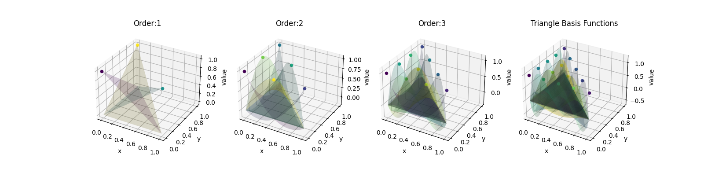
The figures below show the basis points (nodes) for triangle elements of different polynomial orders. The basis points represent the locations where the basis functions take on values of 1 or 0.
For a triangle element, the basis points are distributed according to the polynomial order:
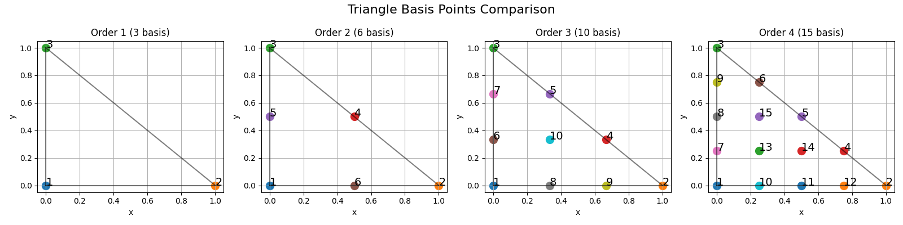
For a triangle element of polynomial order p, the number of basis points n is given by:
\[n = \frac{(p+1)(p+2)}{2}\]
Higher order elements (p > 1) have more basis points, enabling higher-order polynomial interpolation for improved approximation of curved geometries and solutions. The trade-off is increased computational cost with more degrees of freedom.
For quadrilateral elements, the shape functions are constructed using tensor products of 1D Lagrange polynomials in the reference coordinates .. math:: (ξ,η) in [-1,1]times[-1,1]. For a polynomial order p, the shape functions are:
\[N_{ij}(ξ,η) = l_i(ξ)l_j(η)\]
where l_i(ξ) and l_j(η) are the 1D Lagrange polynomials of order p.
The shape functions for a linear quadrilateral element (p=1) are:
The basis points represent the nodes where each shape function equals 1 while all others equal 0. For a quadrilateral element, the basis points are distributed according to the polynomial order:
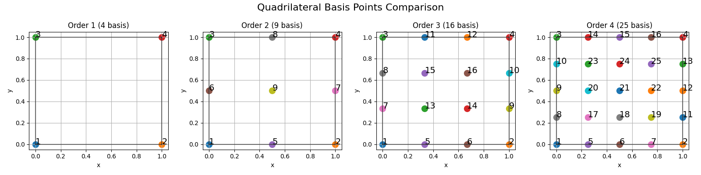
For a quadrilateral element of polynomial order p, the number of basis points n is given by:
\[n = (p+1)^2\]
Higher order elements (p > 1) have more basis points, enabling higher-order polynomial interpolation for improved approximation of curved geometries and solutions. The trade-off is increased computational cost with more degrees of freedom.
The basis functions have the following key properties:
Partition of unity: At any point, the sum of all basis functions equals 1
Interpolation: Each basis function equals 1 at its own node and 0 at all other nodes
Continuity: The functions are continuous across element boundaries
The figures below show the basis functions for tetrahedral elements of different orders:
Order 1 (Linear):
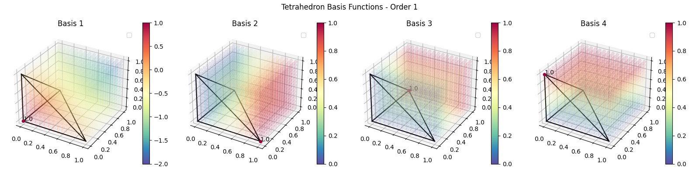
Order 2 (Quadratic):
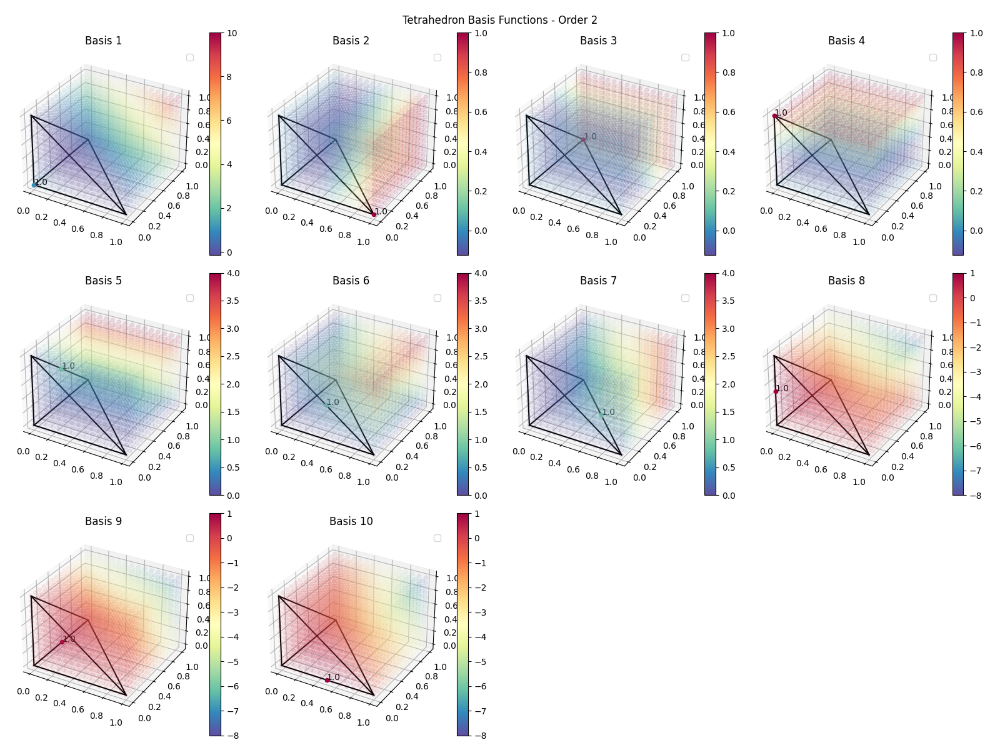
The figures below show the basis points (nodes) for tetrahedral elements of different polynomial orders. The basis points represent the locations where the basis functions take on values of 1 or 0.
For a tetrahedral element, the basis points are distributed according to the polynomial order:
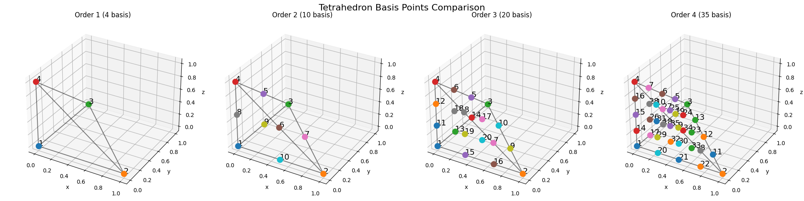
For a tetrahedral element of polynomial order p, the number of basis points n is given by:
\[n = \frac{(p+1)(p+2)(p+3)}{6}\]
Higher order elements (p > 1) have more basis points, enabling higher-order polynomial interpolation for improved approximation of curved geometries and solutions. The trade-off is increased computational cost with more degrees of freedom.
The hexahedral basis functions are used to interpolate values within a 3D hexahedral element. For a hexahedral element of order n, there are (n+1)³ basis functions.
For order 1 (linear), there are 8 basis functions:
The basis functions have the following key properties:
Partition of unity: At any point, the sum of all basis functions equals 1
Interpolation: Each basis function equals 1 at its own node and 0 at all other nodes
Continuity: The functions are continuous across element boundaries
The figures below show the basis functions for hexahedral elements of different orders:
Order 1 (Linear):
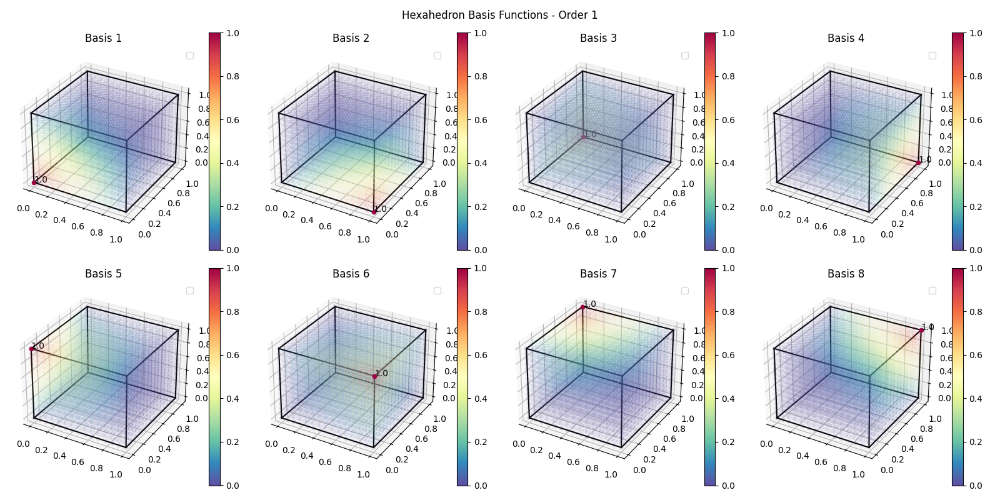
Order 2 (Quadratic):
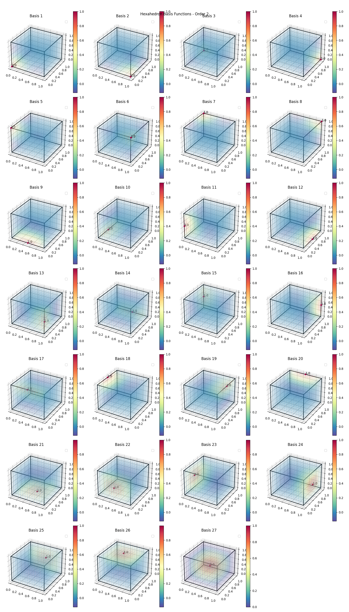
The figures below show the basis points (nodes) for hexahedral elements of different polynomial orders. The basis points represent the locations where the basis functions take on values of 1 or 0.
For a hexahedral element, the basis points are distributed according to the polynomial order:
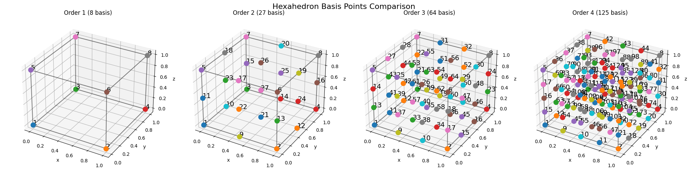
For a hexahedral element of polynomial order p, the number of basis points n is given by:
\[n = (p+1)^3\]
Higher order elements (p > 1) have more basis points, enabling higher-order polynomial interpolation for improved approximation of curved geometries and solutions. The trade-off is increased computational cost with more degrees of freedom.
The pyramidal basis functions are used to interpolate values within a 3D pyramidal element. For a pyramidal element of order n, there are specific numbers of basis functions depending on the order.
For order 1 (linear), there are 5 basis functions:
The basis functions have the following key properties:
Partition of unity: At any point, the sum of all basis functions equals 1
Interpolation: Each basis function equals 1 at its own node and 0 at all other nodes
Continuity: The functions are continuous across element boundaries
The figures below show the basis functions for pyramidal elements of different orders:
Order 1 (Linear):
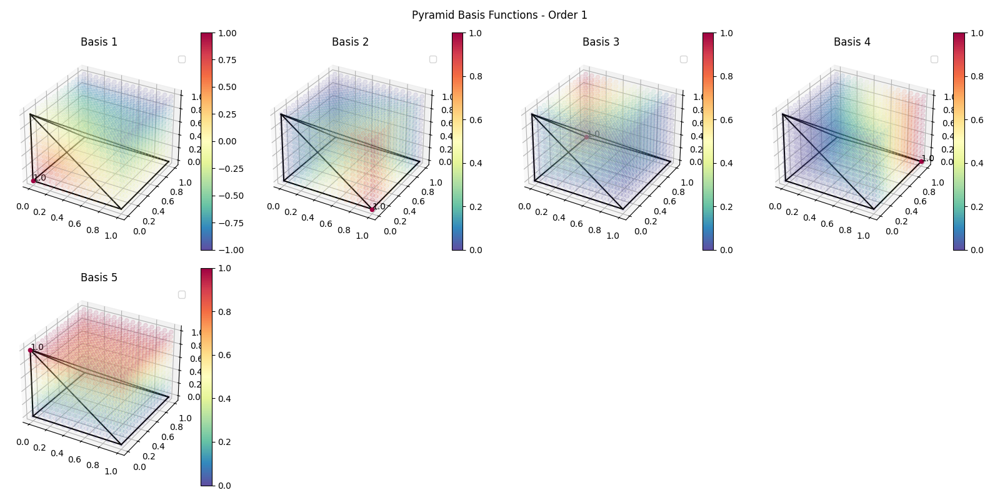
Order 2 (Quadratic):
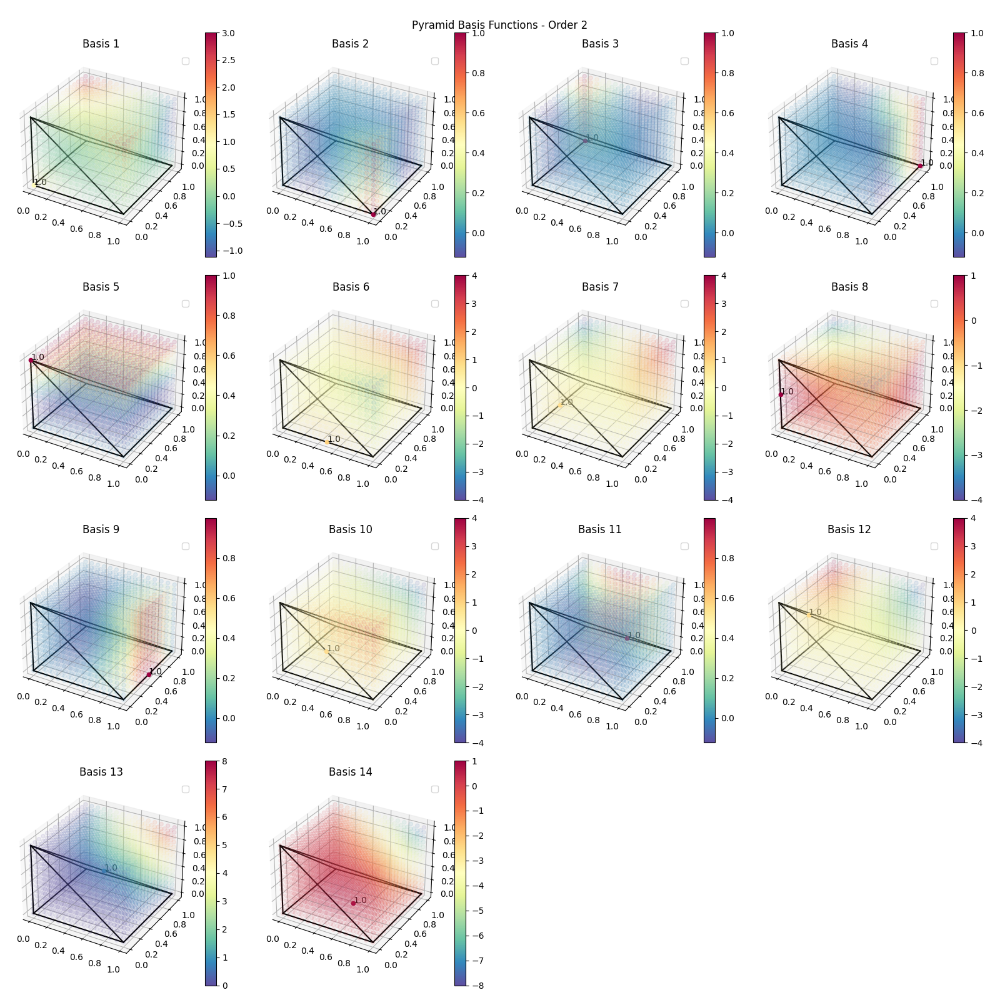
The figures below show the basis points (nodes) for pyramidal elements of different polynomial orders. The basis points represent the locations where the basis functions take on values of 1 or 0.
For a pyramidal element, the basis points are distributed according to the polynomial order:
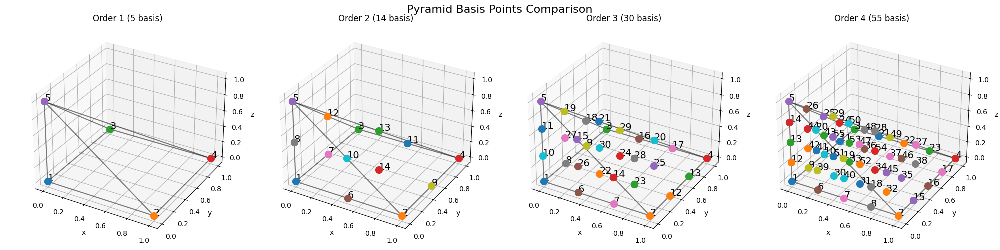
For a pyramidal element of polynomial order p, the number of basis points n is given by:
\[n = \frac{(p+1)(p+2)(2p+3)}{6}\]
Higher order elements (p > 1) have more basis points, enabling higher-order polynomial interpolation for improved approximation of curved geometries and solutions. The trade-off is increased computational cost with more degrees of freedom.
The prismatic basis functions are used to interpolate values within a 3D prismatic element. For a prismatic element of order n, there are specific numbers of basis functions depending on the order.
For order 1 (linear), there are 6 basis functions:
The basis functions have the following key properties:
Partition of unity: At any point, the sum of all basis functions equals 1
Interpolation: Each basis function equals 1 at its own node and 0 at all other nodes
Continuity: The functions are continuous across element boundaries
The figures below show the basis functions for prismatic elements of different orders:
Order 1 (Linear):
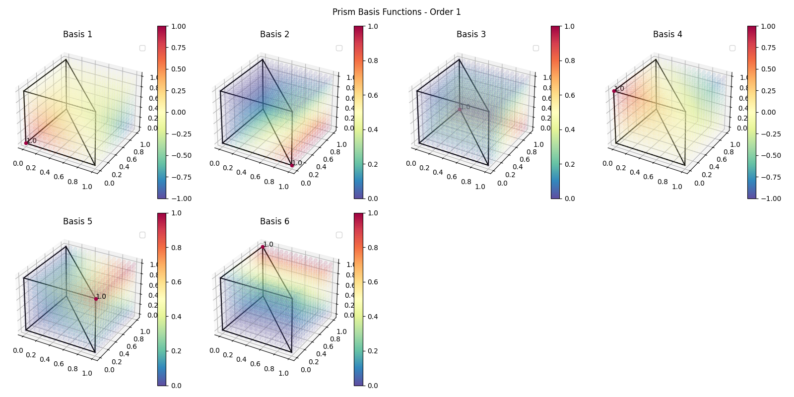
Order 2 (Quadratic):
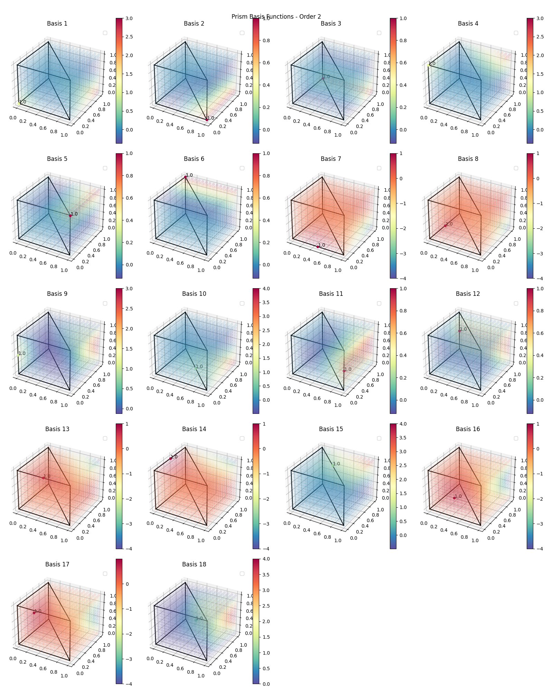
The figures below show the basis points (nodes) for prismatic elements of different polynomial orders. The basis points represent the locations where the basis functions take on values of 1 or 0.
For a prismatic element, the basis points are distributed according to the polynomial order:
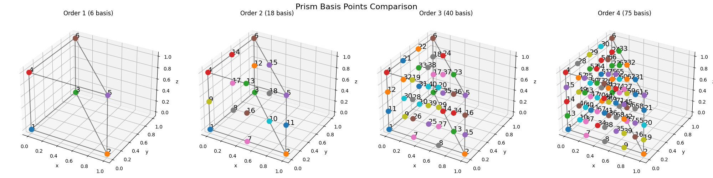
For a prismatic element of polynomial order p, the number of basis points n is given by:
\[n = \frac{(p+1)^2(p+2)}{2}\]
Higher order elements (p > 1) have more basis points, enabling higher-order polynomial interpolation for improved approximation of curved geometries and solutions. The trade-off is increased computational cost with more degrees of freedom.